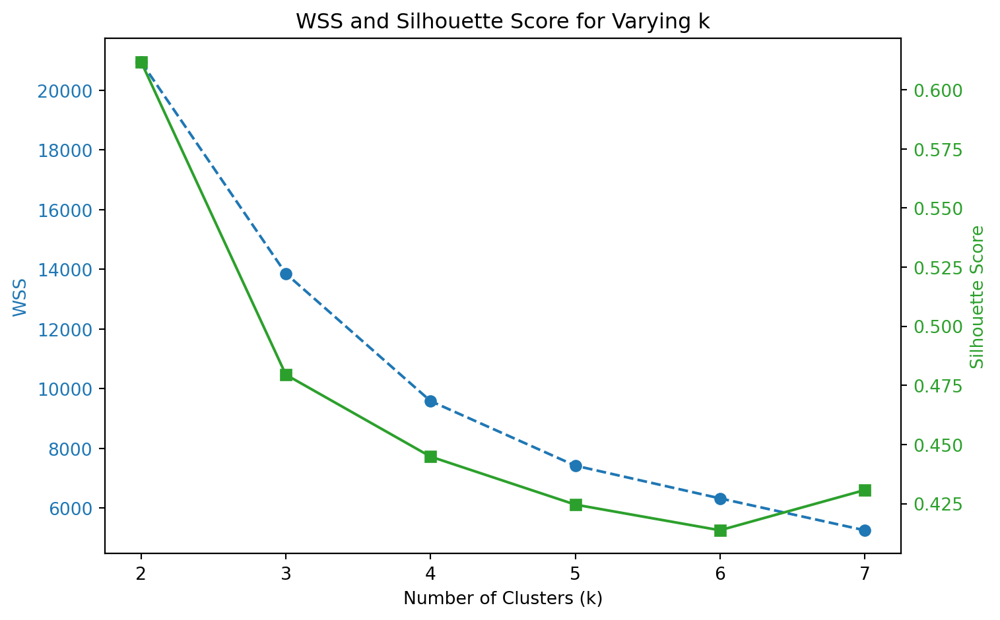
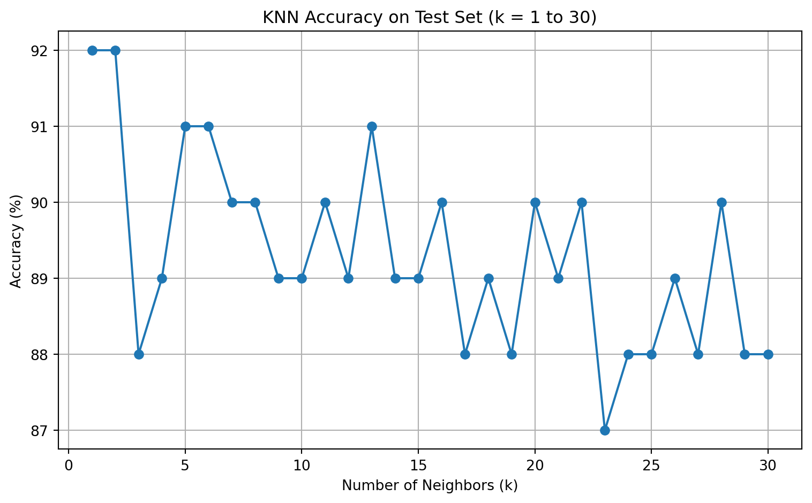

Produces nearly identical clusters and centroids compared to our implementation.
The alignment between the two clustering results confirms that our custom implementation is functioning correctly.
2. Scree Plot: Choosing the Right Number of Clusters
The third plot shows a scree plot of Within-Cluster Sum of Squares (WSS) for values of k from 1 to 10:
WSS drops sharply from k = 1 to k = 3 , then flattens.
This elbow at k = 3 suggests that three clusters is the optimal choice, aligning with known biological species labels in the dataset.
Both the custom and built-in implementations show similar WSS trends, though scikit-learn performs slightly better due to more advanced optimization.
todo: Calculate both the within-cluster-sum-of-squares and silhouette scores (you can use built-in functions to do so) and plot the results for various numbers of clusters (ie, K=2,3,…,7). What is the “right” number of clusters as suggested by these two metrics?
from sklearn.cluster import KMeansfrom sklearn.metrics import silhouette_scoreimport matplotlib.pyplot as pltimport numpy as npX = df_kmeans[["bill_length_mm", "flipper_length_mm"]].dropna().valuesk_values =list(range(2, 8))wss_list = []silhouette_list = []for k in k_values: kmeans = KMeans(n_clusters=k, n_init=10, random_state=42) labels = kmeans.fit_predict(X) wss_list.append(kmeans.inertia_) silhouette_list.append(silhouette_score(X, labels))fig, ax1 = plt.subplots(figsize=(8, 5))color ='tab:blue'ax1.set_xlabel('Number of Clusters (k)')ax1.set_ylabel('WSS', color=color)ax1.plot(k_values, wss_list, marker='o', linestyle='--', color=color, label="WSS")ax1.tick_params(axis='y', labelcolor=color)ax2 = ax1.twinx()color ='tab:green'ax2.set_ylabel('Silhouette Score', color=color)ax2.plot(k_values, silhouette_list, marker='s', linestyle='-', color=color, label="Silhouette")ax2.tick_params(axis='y', labelcolor=color)plt.title("WSS and Silhouette Score for Varying k")fig.tight_layout()plt.show()

Choosing the Number of Clusters (k): WSS and Silhouette Score
To determine the optimal number of clusters for K-means, we evaluated two key metrics across ( k = 2 ) to ( k = 7 ):
1. Within-Cluster Sum of Squares (WSS)
WSS decreases as ( k ) increases, which is expected — more clusters reduce internal variance.
The largest drop occurs between ( k = 2 ) and ( k = 3 ), with diminishing returns afterward.
This forms a classic “elbow” at ( k = 3 ), suggesting it as a natural choice.
2. Silhouette Score
The silhouette score measures how well-separated the clusters are.
It peaks at ( k = 2 ) and drops steadily from ( k = 3 ) onward.
This means 2 clusters yield the best-defined separation, but the drop between ( k = 2 ) and ( k = 3 ) is not steep, and scores remain reasonably high up to ( k = 4 ).
Final Assessment
WSS favors ( k = 3 ) as the optimal trade-off point (elbow method),
Silhouette score slightly favors ( k = 2 ) but still supports ( k = 3 ) as a good solution.
Considering both metrics and domain knowledge (e.g., the Palmer Penguins dataset has three known species), ( k = 3 ) is a justified and interpretable choice.
The scatter plot above shows the synthetic data generated for evaluating the K-Nearest Neighbors (KNN) classifier.
The horizontal axis (x1) and vertical axis (x2) are features drawn uniformly at random between –3 and +3.
The color of each point represents the class label (y), where:
Red indicates class 1 (above the boundary)
Blue indicates class 0 (below the boundary)
This boundary is nonlinear and oscillates, creating a complex decision surface. Class 1 is assigned to points above the boundary, and Class 0 to points below it.
This dataset is useful for evaluating classification models like KNN that are capable of capturing flexible, non-linear boundaries.
test dataset with 100 points, using the same code as above but with a different seed.
We implemented the K-Nearest Neighbors (KNN) algorithm from scratch, using Euclidean distance to find the closest training examples and majority voting for prediction.
To validate our implementation, we compared it to scikit-learn’s built-in KNeighborsClassifier with the same k = 5 . Both methods gave identical predictions and accuracy scores on the test dataset, confirming the correctness of our custom code.
What is the optimal value of k as suggested by your plot?_
from sklearn.metrics import accuracy_scoreimport matplotlib.pyplot as pltk_range =range(1, 31)accuracies = []for k in k_range: y_pred_k = knn_predict(X_train, y_train, X_test, k=k) acc = accuracy_score(y_test, y_pred_k) accuracies.append(acc)plt.figure(figsize=(8, 5))plt.plot(k_range, np.array(accuracies) *100, marker='o')plt.title("KNN Accuracy on Test Set (k = 1 to 30)")plt.xlabel("Number of Neighbors (k)")plt.ylabel("Accuracy (%)")plt.grid(True)plt.tight_layout()plt.show()

KNN Accuracy vs. Number of Neighbors (k)
The plot above shows the test set classification accuracy of our custom KNN classifier as we vary k from 1 to 30.
Key Observations:
Accuracy is highest at k = 1 and k = 2 , reaching 92%.
As k increases, accuracy fluctuates slightly but generally declines and stabilizes around 88–90%.
There is a noticeable dip in accuracy at k = 23 , the lowest point in the range.
Optimal k :
Although both k = 1 and k = 2 achieve the highest accuracy (92%), k = 2 may be preferred to slightly reduce overfitting.
Values of k between 3 and 10 also perform well, making them viable alternatives.
Conclusion:
Choosing k = 2 offers the best balance between accuracy and generalization for this dataset. Very low k (e.g., 1) may overfit, while higher values begin to underfit or introduce more bias.